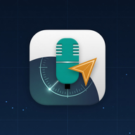

Ghi lời ATC · clearance ↔ readback · tìm / phát lại — không thay hearback của ATCO
Chưa có hình. Bấm Chọn file hoặc kéo thả vào đây.
Kéo trên phổ để chọn đoạn nghe. Bấm để tới lui.
Chọn tên file rồi bấm Phát để nghe và ghi hội thoại.
FILE: bấm Phát để tự động nghe và ghi từng đoạn. Phân vai và đối chiếu readback chỉ chạy khi bấm Phân tích lại. LIVE radio: line-in / micro (tắt echo cancel) → Whisper ATC từng đoạn. Roger/Wilco không thay readback số liệu. Sửa lời trên ô kịch bản rồi Phân tích lại = hiệu đính người (HUMAN), không phải AI verified.
created by Lộc đẹp trai
0%
Bắt đầu…